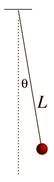

Teenagers have a reputation for rebelliousness, and yours truly was no exception. Ah those giddy days of youth, so distant now as I approach senility. Some kids drank, others went skateboarding, and I, like many, ended up falling in with the ‘wrong’ crowd. Before my well-meaning family was able to do so much as lift a finger, I was spending large amounts of time with second order differential equations. Hey, don’t look at me that way, we’ve all made mistakes.

Such an impression did these equations make on me that I left behind my dream of becoming a professional lion-tamer to revel in their company. I remain slightly enraptured by their spell, but this relationship has matured (or rotted?) in a few ways; let me try to explain.
I first met these constructs in my A-level maths classes (ages 16-18) where we discussed various approaches to solving these equations, solution classes, and so on. As with any new idea you begin confused and slowly get your head around it; until eventually you know what you’re doing and the manipulation of symbols becomes fun, a bit like solving crosswords. Crosswords have never been able to hook me though, and it wasn’t until I bumped into these equations in a different setting that my addiction took hold.
You see, there is a mapping between terms in this equation and many objects in the real world, and one of these settings had recently popped up in my Physics classes. The tick-tocking of a pendulum can, in certain regimes, be described by this equation. We all know Newton’s second law, that force is equal to mass times acceleration, F = ma, a fine differential equation (since a = acceleration is a second derivative). If the pendulum is not swinging too wildly then it turns out the gravitational effect on the pendulum angle is linear, and we get the following second order differential equation:
This already struck me as slightly magical, here is a real piece of material, a solid bar of metal swinging back and forth, and somehow sets of rules and symbols I had been busy manipulating during maths lessons the week before could be used to predict its motion. How cool was that! It’s like your crossword suddenly started predicting the weather.
But it gets better. As with all models of the real world, the one I describe above is an approximation. As you watch a real pendulum and compare them to your model (eqn. 2) you realise there are some horrendous discrepancies that at first go unnoticed. For one thing the pendulum in your model never stops whereas the real one eventually comes to rest. Why could this be? You think for a bit and realise that your current model includes no drag. Friction will slow you down, and you know the faster you go the larger the effect. Well, thinks the A-level maths student, that’s perfect, we know how to add a term to our equation that depends on the velocity! And we get model 2:
And lo and behold it works! You looked at the real world, used your physical intuition to work out what important aspect of reality was not being included in your model, found the right collection of Greek and Latin letters to represent that effect in the little game we’ve made up called ‘differential equations’ and the real world agrees with you! This really is Black Magic.
And this process can be repeated again and again, back and forth from reality to maths. You realise air pressure will affect drag so you model that, or perhaps temperature variations will change the length of the pendulum speeding up or down its oscillations, or buoyancy effects, changes in gravity, the list goes on. Effect after effect in the real world is transmuted into terms in the equation and the prediction becomes finer and finer. One engineering masters student did exactly this process with the Trinity College Cambridge Clock, and managed to find the effect of tidal variations, i.e. the effect of the moon on the pendulum. Think of that, some symbols written down on a page and the simple observing of a pendulum lead you to deduce facts about the Moon!
Anyway, it should be obvious by now that I was bowled over. Off to university I went to learn more about this correspondence, and I was not disappointed. Each week the lecturer dished up another mathematical concept, manipulated it, proved theorems, and generally had a good time. Then the next lecturer takes your hand and guides you through the correspondence between that conceptual framework and some carefully chosen aspect of reality, ‘hey look! Imaginary numbers help you explain why metals are shiny!’. It’s not surprising that you end up thinking these lecturers must truly have access to the textbook of the universe, that it is written in maths, and that if you only read a few pages further you’ll reach the equations that tell you how to get a girlfriend. (This section was missing from my textbook, if found please email: youmustbejoking@imbizan.com)
This almost mystical correspondence has been noted by our predecessors more eloquently than you see it here: Galileo wrote that ‘the book of nature is written in the language of mathematics’ and a few hundred years later the physicist Eugene Wigner wrote his famous article on ‘the Unreasonable Effectiveness of Mathematics in the Natural Sciences.’ Suffice it to say, that this correspondence between the world and mathematical argument seems as mysterious as it is helpful.
So, why am I mentioning this to you now? Perhaps free therapy? Well, maybe. But I’d prefer to pretend that it serves as a good preamble for my recent change of heart on the mystery of maths in science. You see, the version of events I’ve outlined above is a commonly held opinion, at least among physicists, and for good reason. But on reflection I think digging a little deeper into the relationship between Science and Mathematics might at least constrain its miraculousness.
What is Science? We see a confusing phenomenon in the world (a red sky at sunset), we lay out our building blocks, things that may be relevant (the nature of light, atmospheres, our eyes, psychological effects), and we try to build a rational argument that links the latter to the former (in this case the fact that the light must travel through more atmosphere at sunset, combined with a knowledge of the scattering properties of the atmosphere). We build from lower level to higher level using a logical chain in a way that will allow us to predict situations we’ve never seen, just change the inputs and follow the same rationale (e.g. what will sunsets look like on other planets?)
And what is Mathematics? We lay out some axioms - logical statements we take as given - and we play with them to see what ingenious proofs and facts we can find using only the axioms provided. It was a shock to me how made-up these axioms are. When you stumble into a new area of maths it begins by stating what collection of arbitrary axioms we’ll be using today and then you play. At its purest maths really is an art form performed only for the enjoyment of a small crowd of experts.
I hope that by seeing these two discussions side by side some similarities might have struck you. Maths and Sciences both seek to jump from underlying assumptions to a human-intelligible understanding of some, perhaps counter-intuitive, higher level result. The way that we bridge this gap is through some logical chain, whether that be second order differential equations or reasoning through the effect of upregulating a genetic promoter on downstream protein expression. Mathematics is simply the crystallisation of the pure reasoning part of science removed from any need to constrain flights of logical fancy by observations of the real world.
That maths seems to be the language of the book of Nature is then unsurprising, all rational scientific explanations involve building logical chains, and maths is, correctly framed, the study of the kinds of logical chains humans can use. In other words, when you ask Scientific questions your answers will be chains of logic – and Mathematics is the word we use to describe the study of chains of logic. That the logical chains we study happen to match up to the ones we use to understand reality is a symptom of the kinds of chains we study – we’re often motivated to study exactly those logical chains that have application to the real world.
There remains, of course, a deeper question. Why does Science work at all? Why are we able to build rational explanations of phenomena? The universe doesn’t need to be understandable.
There’s probably no answer to this. However, we can say that humans are supremely good at spotting patterns in Nature, even non-existent patterns that have led humanity to believe numerous superstitions since time immemorial. And it is easy to see that this is a useful evolutionary adaption - for example, being able to predict future weather patterns from cloud formations is handy. However, if there were no patterns for us to learn, then we wouldn’t have evolved the intellect to discover them. So, the closest I can get to an answer is an anthropic principle: we have evolved to be intelligent therefore there must be patterns in the world for us to understand.
Ah! Now I am becoming more speculative than usual; but my thrust is simple. The way you’re taught maths as a scientist is exactly the kind of introduction that will make you marvel at this mysterious construction’s power to explain the natural world. But that hides the process by which the mathematical arguments were created, making it seem more mystical than it really is. To answer Galileo, the book of Nature is written in maths because there was no book before humans, we made it up, and when we made it up, we wrote it in the only logical language we knew – maths.
Or perhaps you disagree, feel free to argue with me!